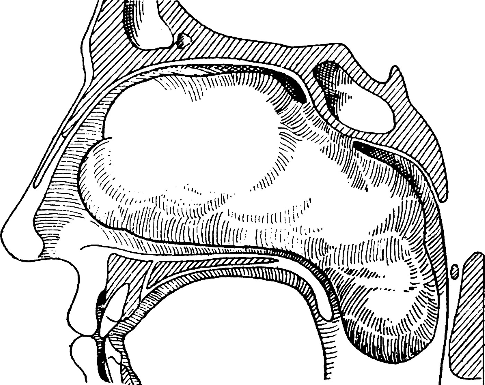
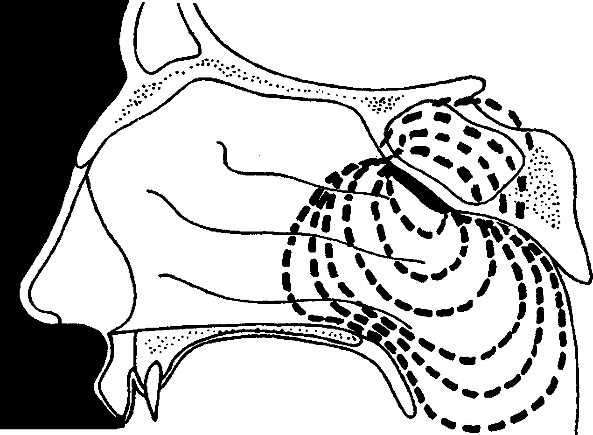
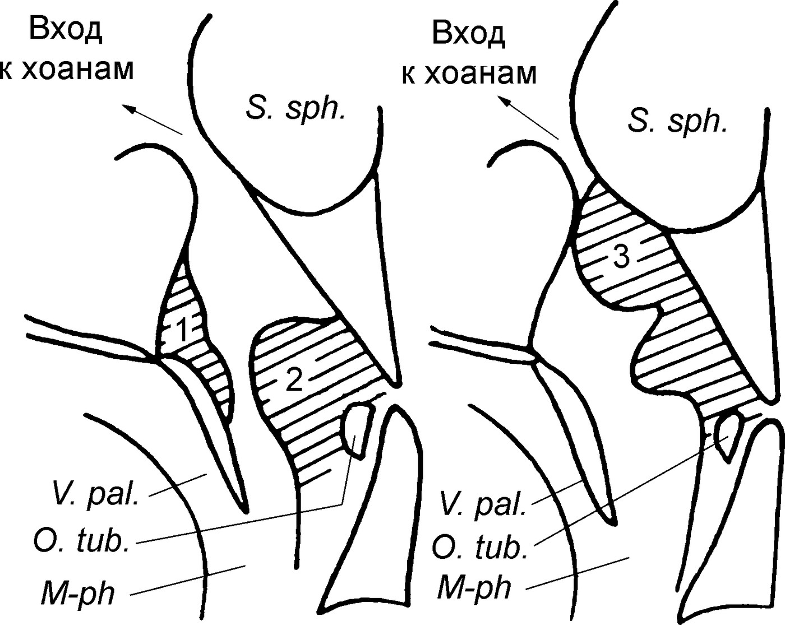
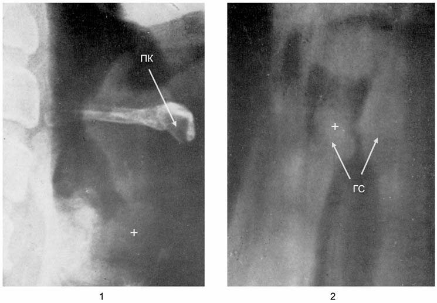

Опухоли глотки
Общие сведения
Опухоли указанной анатомической области подразделяются на собственно опухоли глотки и окологлоточные (парафарингеальные) опухоли; по локализации они делятся на эпи-, мезо- и гипофарингеальные опухоли. По происхождению опухоли глотки делятся на эпителиальные из слизистой оболочки, железистые из слизистых желез глотки, лимфоидные и ретикулярные из лимфаденоидного аппарата глотки. Парафарингеальные опухоли возникают в окологлоточном пространстве и подразделяются на смешанные опухоли, происходящие из глоточных отрогов околоушной железы, невромы, возникающие в заднем субпаротидном пространстве, и ретрофарингеальные дизэмбриогенетические хордомы.
Доброкачественные опухоли глотки
Доброкачественные опухоли глотки отличаются весьма медленным ростом и, в большинстве своем, обнаруживаются случайно, если они не достигли такого размера, при котором возникают функциональные нарушения. Доброкачественные опухоли глотки, по данным одних авторов, возникают реже злокачественных опухолей глотки, по данным других — так же часто или даже чаще.
Доброкачественные опухоли носоглотки
Эти опухоли имеют исходную точку в области хоан, или свода носоглотки, или латеральной его стенки. Большинство из них мезенхимального происхождения — фибромы, липомы, эндохондромы и т. п. Реже встречаются опухоли эпителиального происхождения — папилломы, кисты и др. Очень редко наблюдаются опухоли эмбрионального происхождения — тератомы. Фиброзные опухоли встречаются в основном в юношеском возрасте, у грудных детей чаще наблюдаются дермоидные кисты, у взрослых — хоанальные полипы и ретенционные кисты.
Фиброма носоглотки
Фиброма носоглотки развивается почти исключительно у мальчиков 10–13 лет, однако в литературных источниках второй половины XX в. нередко встречаются описания этой опухоли у лиц старше 30 лет. До завершения полового созревания она обладает интенсивной потенцией роста, после чего опухоль подвергается обратному развитию. Однако до этого времени из-за интенсивного роста опухоли и врастания ее в окружающие пространства она успевает нанести порой непоправимый вред соседним органам, благодаря чему в клиническом отношении эту опухоль называют относительно доброкачественной или доброкачественной опухолью со злокачественным клиническим течением. Такую же характеристику получили и переходноклеточные (инвертированные) папилломы этой области, обладающие инвазивным ростом и в клиническом плане мало чем отличающиеся от эпителиом.
Фиброма носоглотки — это фиброзная плотной консистенции опухоль, отличающаяся значительной кровоточивостью, из-за чего получила название ангиофибромы. Эта опухоль известна еще со времен Гиппократа, который предложил для удаления этой опухоли так называемый трансназомедиальный подход путем раздвоения пирамиды носа. Французский хирург Nélaton дал ей название фиброзного полипа основания черепа (1853), Naob — носоглоточной фибромы (1898), Coenen — базального фиброида (1922), Friedberg — ангиофибромы (1940).

Исходным местом опухоли чаще всего является свод носоглотки, ее глоточно-основная фасция (базилярный тип опухоли, по Лихачеву А. Г., 1954). Исследования конца XX в. показали возможность развития юношеских фибром носоглотки из крыловидно-челюстной и клиновидно-решетчатой областей.

Этиология заболевания практически неизвестна. Существующие теории дизэмбриогенеза и эндокринной дисфункции проблемы до конца не решили. Эндокринная теория основана на том, что опухоль развивается одновременно с развитием вторичных половых признаков и период ее развития завершается вместе с завершением полового созревания. Замечено также, что при фиброме носоглотки наблюдается нарушение секреции 17-кетостероидов и соотношения таких гормонов, как андростерон и тестостерон.
Патологическая анатомия. Фиброма носоглотки представляет собой весьма плотную опухоль, сидящую на широком основании, тесно спаянном с надкостницей. Прочность срастания с надкостницей настолько велика, что при удалении опухоли путем вырывания иногда вместе с ней удаляются и фрагменты подлежащей кости. Поверхность опухоли покрыта гладкими сосочковыми образованиями бледно-розового или красноватого цвета в зависимости от степени васкуляризации опухоли. Плотность опухоли определяется ее фиброзной природой. Опухоль обладает ярко выраженным экстенсивным ростом, смещая и разрушая все ткани и заполняя все соседние полости, находящиеся на ее пути (хоаны, полость носа, орбита, основная пазуха, нижние отделы носоглотки, придаточные пазухи носа, скуловая и височная ямки и т. п.). При распространении кпереди опухоль заполняет носовые ходы, разрушая сошник, перегородку носа, верхние и средние носовые раковины, проникая в ячейки решетчатого лабиринта, лобную и верхнечелюстную пазухи, деформируя пирамиду носа и нарушая благообразие лица. При распространении кзади и книзу опухоль разрушает переднюю стенку основной пазухи и проникает в нее, иногда достигая гипофиза, распространяется книзу, нередко достигая мягкого неба и ротоглотки.
Таким образом, благодаря экстенсивному росту и разрушающему действию на окружающие органы и ткани фиброма носоглотки в клиническом отношении может быть отнесена к «злокачественным», однако метастазов она не дает и гистологически относится к доброкачественным опухолям. Морфологически она состоит из различной выраженности сосудистых сплетений и соединительнотканной стромы. Опухоль покрыта эпителием, который в области носоглотки носит характер однослойного плоского, а в полости носа — цилиндрического мерцательного эпителия, — факт, объяснимый тем, что опухоль возникает в зоне перехода плоского эпителия в цилиндрический. Сосудистое наполнение опухоли, особенно венозными сплетениями, очень велико. Вены путем резорбции их стенок сливаются, образуя целые «озера» крови с очень непрочными «берегами», травматизация которых (например, струей воздуха при чихании или спонтанно) вызывает профузные, с трудом останавливаемые носовые и глоточные кровотечения. При обратном развитии опухоли в эндотелии сосудов возникают некробиоз, гиалинизация, а в строме — явления воспалительного характера. В итоге нежизнеспособные ткани опухоли подвергаются резорбции, опухоль резко сокращается в размерах и замещается рубцовой тканью.
Симптомы и клиническое течение. Симптомы фибромы носоглотки развиваются медленно и подразделяются на субъективные и объективные. На начальных стадиях развития опухоли возникает постепенно нарастающее затруднение носового дыхания, иногда беспричинные головные боли и «глухие» боли в области основания носа, быстрая умственная и физическая утомляемость, из-за которой дети отстают в усвоении школьной программы, в физическом развитии, часто болеют простудными заболеваниями. Выделения из носа носят слизисто-гнойный характер. Появляются жалобы сначала на незначительные, затем на усиливающиеся носовые кровотечения, из-за которых у ребенка развивается анемия. В дальнейшем опухоль заполняет полость носа, вызывая нарастающее затруднение носового дыхания вплоть до полного его отсутствия. У ребенка постоянно открыт рот, речь становится гнусавой (rhinolalia operta), обтурация слуховых труб вызывает тугоухость, одновременно происходит утрата обоняния и снижение вкусовой чувствительности. При контакте опухоли с мягким небом больные предъявляют жалобы на нарушения глотательной функции, частые поперхивания. Сдавление чувствительных нервных стволов вызывает невралгические глазные и лицевые боли.
При обследовании взору врача представляется бледный ребенок или юноша с постоянно раскрытым ртом, с синими разводами под глазами и припухлым основанием носа. В носовых ходах слизисто-гнойные выделения, которые не могут быть удалены больным посредством высмаркивания из-за обтурации опухолью хоан (экспираторный клапан). После удаления этих выделений отсосом видна утолщенная гиперемированная слизистая оболочка, увеличенные синюшно-красные носовые раковины. После смазывания слизистой оболочки носа адреналином и сокращения носовых раковин в носовых ходах становится обозримой опухоль в виде малоподвижного гладкого, серовато-розового или красноватого образования, заполняющего глубокие отделы носа, сильно кровоточащая при дотрагивании острым инструментом. Нередко опухоль, заполняющая полость носа, сочетается с одним или несколькими банальными вторичными полипами носа.
При задней риноскопии отсутствует типичная картина, при которой хорошо видны хоаны, сошник и даже задние концы носовых раковин. Вместо этого в носоглотке определяется массивная синюшно-красная опухоль, полностью ее заполняющая и резко отличающаяся по виду от банальных аденоидных вегетаций. При пальцевом исследовании носоглотки, которое следует проводить с осторожностью, чтобы не вызвать кровотечения, определяется плотная неподвижная солитарная опухоль.
Сопутствующими симптомами могут быть слезотечение, экзофтальм, расширение корня носа. При двустороннем проявлении этих признаков лицо больного приобретает своеобразный вид, получивший в зарубежной литературе название «лицо лягушки» (facies ranicus; rana — лягушка). При орофарингоскопии может выявляться выбухание мягкого неба, обусловленное наличием опухоли в средних отделах глотки.
Неудаленная опухоль разрастается до огромных размеров, заполняя все риносинусное пространство, орбиту и, выходя за их пределы, вызывает тяжелые функциональные и косметические нарушения. Наиболее грозным осложнением является прободение опухолью ситовидной пластинки и проникновение ее в переднюю черепную ямку. Начальные признаки этого осложнения проявляются синдромом повышения внутричерепного давления (сонливость, тошнота, рвота, инкурабельная головная боль), затем присоединяются признаки ретробульбарного синдрома (выпадение полей зрения, офтальмоплегия, амавроз). Частые геморрагии и нестерпимые головные боли, рвота приводят больного к тяжелому общему состоянию, кахексии, анемии, мало чем отличающихся от состояния при наличии злокачественной опухоли. Нередко такие запущенные состояния, встречавшиеся в прежние времена в малоцивилизованных странах, осложнялись менингитом и менингоэнцефалитом, неминуемо ведущими к гибели больных.
Диагноз устанавливают, как правило, на основании клинической картины возникновения фибромы носоглотки у лиц мужского пола в детском и юношеском возрасте. Распространенность опухоли устанавливают при помощи рентгенологического или МРТ- либо КТ-исследований.
Дифференциальный диагноз при фиброме носоглотки приобретает существенное значение, поскольку от его результата зависит тактика лечения и, возможно, дальнейший прогноз. Фиброму носоглотки дифференцируют с аденоидами, кистами, фибромиксомой, раком и саркомой носоглотки. Основным отличием является ранняя и частая кровоточивость, что совершенно не наблюдается при остальных доброкачественных опухолях данной локализации, а при злокачественных опухолях кровотечение возникает лишь на развитых клинической и морфологической стадиях.
Прогноз зависит от степени распространенности опухоли, своевременности и качества лечения. При небольших опухолях, распознанных в самом начале их возникновения, и радикальном лечении прогноз обычно благоприятный. В запущенных случаях, когда не удается провести радикальное лечение, а частые паллиативные хирургические и иные вмешательства, как правило, завершаются рецидивами и, возможно, малигнизацией опухоли, — прогноз пессимистичный. По зарубежным статистическим данным, смертность во второй половине XX в. при хирургических вмешательствах по поводу фибромы носоглотки составила 2%.
Хоанальные полипы, кисты и другие доброкачественные опухоли носоглотки
Фибромиксома, или хоанальный полип. Фибромиксома берет свое начало в хоанальной или этмоидо-сфеноидальной области. Внешне эта доброкачественная опухоль выглядит как полип на ножке, который легко удаляется без кровотечения специальным крючком. По сравнению со слизистыми полипами полости носа, консистенция фибромиксомы отличается большей плотностью. Растет в направлении глотки и полости носа. «Старые» фибромиксомы уплотняются, приобретают красноватый цвет и нередко симулируют фиброму носоглотки, однако в отличие от нее не кровоточат и не обладают экстенсивным ростом.
Синусо-хоанальный полип. Фактически синусо-хоанальный полип — проявление полипозного гайморита, поскольку он исходит из верхнечелюстной пазухи и пролабирует через хоану в носоглотку. Реже он исходит из основной пазухи. Внешне напоминает язык колокола, свисающий в носоглотку и иногда достигающий ротоглотки, располагаясь между ее задней стенкой и мягким небом. Этот полип является псевдокистокистозным образованием беловато-серого цвета овоидной формы, он полностью выполняет носоглотку и вызывает затруднение носового дыхания и тубарные нарушения слуха.
Носоглоточные кисты. Возникают в результате либо закупорки протока слизистой железы (ретенционная киста), либо глоточного мешка Торнвальда (Thornwald). Это редкие опухоли, характеризующиеся длительной эволюцией и проявляющиеся нарушением носового дыхания и слуха вследствие перекрытия носоглоточного устья слуховой трубы. При задней риноскопии определяется гладкая округлая опухоль серого цвета эластической консистенции.
Дермоидные кисты носоглотки. Очень редко встречающиеся врожденные доброкачественные опухоли, чаще наблюдаемые у младенцев. Развиваются очень медленно и производят минимальные функциональные нарушения — сухой рефлекторный кашель и некоторые неудобства при глотании. Как правило, ножка этого «полипа» исходит из боковой стенки носоглотки в окружности носоглоточного устья слуховой трубы и нередко достигает глоточно-надгортанной складки. При обычной фарингоскопии не выявляется, однако при рвотном рефлексе может появиться в ротоглотке в виде продолговатого солитарного полипа беловато-серого цвета с гладкой поверхностью. Поверхность его имеет кожистый вид с сосочками, потовыми и жировыми железами, а также волосками. Под этим слоем находится клеточная ткань, пронизанная венами. В центре опухоли определяется ядро, образованное плотной соединительной тканью, иногда содержащей фрагменты костной или хрящевой ткани, а также поперечнополосатых мышечных волокон (типично для эмбриональных опухолей). Впоследствии киста склерозируется и через некоторое время (месяцы, годы) рассасывается.
Папилломы и липомы — доброкачественные опухоли, редко встречающиеся в верхних отделах глотки и визуально весьма трудно отличимые от банальной аденоидной ткани. Диагноз устанавливают при гистологическом исследовании.
Менингоцеле основания черепа иногда может возникать в носоглотке (чаще всего у детей). Отличается от остальных доброкачественных опухолей тем, что во время плача ребенка увеличивается в размерах. Такие «опухоли» не подлежат лечению, поскольку им сопутствуют другие тяжелые аномалии развития черепа и других органов, обычно несовместимые с жизнью.
Доброкачественная плазмоцитома происходит из ретикулоэндотелиальной ткани и возникает чаще всего в костном мозге; более 80% экстрамедуллярных опухолей этого вида локализуются в верхних дыхательных путях (Gîrbea Șt. et al., 1964). По внешнему виду напоминают полипоидные образования сероватого или розовато-фиолетового цвета, не изъязвляются. Диагноз базируется на гистологическом исследовании. Солитарная плазмоцитома может быть как доброкачественной, так и злокачественной. Доброкачественная плазмоцитома встречается редко и не должна смешиваться с простой гранулемой, состоящей из большого количества плазмоцитов. Злокачественность плазмоцитомы исключается тем, что при рентгенографии не обнаруживают поражений костей, стернальный пунктат не содержит патологических изменений костного мозга1 и миеломных клеток, в моче нет белка Бенс-Джонса и, наконец, при удалении опухоли не наблюдается рецидивов. В большинстве своем плазмоцитомы — это злокачественные опухоли экстрамедуллярной локализации, либо они имеют характер «диффузной» миеломы, составляющей сущность миеломной болезни.
Доброкачественные опухоли ротоглотки и гортаноглотки
В указанной области иногда могут развиваться опухоли, происходящие из тканей, составляющих морфологическую основу данных анатомических образований, как-то: из эпителия и соединительной ткани, например папилломы, эпителиомы, аденомы, фибромы, липомы, хондромы, реже — сосудистые опухоли: ангиомы, лимфомы.
Папилломы развиваются чаще всего на уровне мягкого неба, на небных миндалинах, реже — на надгортаннике или одном из черпаловидных хрящей. Они могут сочетаться с папилломатозом гортани. Папилломы глотки имеют вид ежевики серовато-розового цвета, часто располагаются на ножке, исходящей из верхушки язычка. Не причиняют беспокойства, если не достигают значительных размеров или не вызывают опасения опухолевого заболевания.
Аденомы возникают из железистого аппарата и относятся к «твердым» гомогенным или кистозным опухолям. Реже встречаются глиомы и миксомы. В гипофаринксе эти опухоли чаще всего возникают на язычной поверхности надгортанника и в грушевидных синусах. Железистые опухоли корня языка являются кистозными образованиями величиной с горошину. Опухоли из дистопированных слюнных желез могут достигать величины грецкого ореха или небольшого яблока. Такие опухоли причиняют значительные затруднения при глотании и подлежат удалению.
Сосудистые опухоли, к которым относятся ангиомы, лимфомы, чаще всего ассоциируются с аналогичными опухолями полости рта и располагаются на корне языка или на небной занавеске. Они могут быть артериальными, венозными, смешанными или иметь кавернозное строение. Ангиомы кровеносных сосудов отличаются цветом от ярко-красного (например, полиповидная телеангиэктазии небной миндалины) до синюшно-багрового (кавернозная ангиома). Лимфомы обычно имеют тускло-желтоватый цвет и отличаются большей плотностью, нежели опухоли, состоящие из кровеносных сосудов. Они, в отличие от ангиом, не подвергаются аррозии, в то время как опухоли из кровеносных сосудов часто являются причиной кровотечений, что служит показанием к их удалению. Обычно такие опухоли относятся к компетенции специалистов хирургической стоматологии.
Соединительнотканные опухоли отличаются большим разнообразием. Фибромы и липомы располагаются на слизистой оболочке; первые имеют серовато-голубоватый цвет, вторые — желтоватый и могут напоминать лимфомы. Фибромы небных миндалин происходят из соединительнотканного слоя. На задней стенке глотки возникают остеомы, хондромы и невриномы.
Опухоли из ткани щитовидной железы исходят из незаращенного эмбрионального щитоязычного канала (canalis thyreoglossus) и развиваются в корне языка (так называемый язычный зоб) непосредственно впереди надгортанника, достигают величины грецкого ореха или куриного яйца. Эти опухоли имеют сферическую форму, располагаются по средней линии в плотной соединительнотканной капсуле и покрыты нормальной слизистой, подвижной относительно подлежащего слоя, в которой иногда проходят расширенные вены. Сначала опухоль вызывает лишь ощущение инородного тела в нижнем отделе глотки, но когда она достигает более значительного размера, возникают нарушения дыхания вплоть до асфиксии, требующей экстренной трахеотомии. Опухоль выявляется при непрямой ларингоскопии и при пальпации, при которой определяется либо флюктуирующее образование (кистозная форма), либо плотная опухоль (паренхиматозная или коллоидная форма).
Опухоли щито-хио-надгортанного пространства, ограниченного сзади язычной поверхностью надгортанника, спереди щитоподъязычной мембраной и подъязычно-надгортанной связкой, чаще всего имеют кистозную природу, но могут состоять и из фиброзной ткани или даже носить смешанный характер. В начале развития эти опухоли вызывают легкие нарушения дыхания, особенно при физической нагрузке, однако, по мере их роста нарушения дыхания становятся все более значительными, особенно во сне (храп, апноэ). При непрямой ларингоскопии определяется гладкостенная округлая, покрытая нормальной слизистой оболочкой опухоль, которая смещает надгортанник ко входу в гортань, деформирует черпалонадгортанную складку, расширяя ее и сглаживая гортанно-глоточную борозду.
Злокачественные опухоли глотки
Злокачественные опухоли глотки — заболевание редкое. По статистическим данным середины XX в., полученным в Ленинградском институте онкологии, из 11 тыс. случаев злокачественных новообразований различной локализации лишь 125 были представлены опухолями глотки. Злокачественные опухоли глотки могут развиваться из всех слоев, образующих этот орган. Так, из поверхностного эпителиального слоя развиваются раковые опухоли (злокачественные эпителиомы), из мезенхимального слоя, поддерживающего эпителиальный и лимфоидный слои, развиваются саркомы соединительнотканного и лимфоидного происхождения. Наряду с этими видами злокачественных опухолей в глотке могут возникать меланосаркомы и тератомы.
Злокачественные опухоли носоглотки
В подавляющем большинстве случаев (80–95%) злокачественные опухоли носоглотки возникают у лиц мужского пола, причем саркомы — в более молодом, а эпителиомы — в более пожилом возрасте. По некоторым данным, саркомы возникают чаще у женщин. По зарубежным статистическим данным, лица желтой расы болеют чаще (18%) представителей других народов.
Клиническая эволюция злокачественных опухолей носоглотки подразделяется на четыре периода — дебюта, развитого состояния, экстерриторизации и терминальный.

Период дебюта проявляется несколькими клиническими симптомами. Чаще всего, что особенно свойственно лимфоэпителиомам, наблюдаются явления аденопатии, внутренние яремные лимфоузлы приобретают деревянистую плотность и могут быть спаяны с сосудисто-нервным пучком. Одновременно возникают признаки обтурации слуховой трубы (понижение слуха на одно или оба уха, аутофония, шум в ухе), обусловленные распространением опухоли в носоглоточное отверстие слуховой трубы. Распространение опухоли в хоаны затрудняет носовое дыхание сначала с одной, а затем с обеих сторон. Возникают невралгические боли, проявляющиеся сначала интермиттирующей, затем персистирующей оталгией. Чаще всего признаки периода дебюта трактуют как различные банальные (простудные, воспалительные, аллергические и др.) заболевания. Онкологическая настороженность появляется, когда больной предъявляет жалобы на ощущение инородного тела в области носоглотки. Именно в этом случае опухоль становится доступной визуальному распознаванию, а также рентгенодиагностике. На ранних стадиях опухоль можно распознать только при помощи МРТ.
В период развитого состояния все перечисленные признаки периода дебюта приобретают значительную интенсивность, и опухоль достаточно легко выявляется как при задней, так и при передней риноскопии, в зависимости от направления ее роста. Опухоль представляется либо в виде кровоточащего папилломатозного образования с изъязвленной поверхностью (рак), либо плотноватым диффузным образованием на широком основании (саркома). Боли в области уха, носоглотке, в глубинных отделах основания черепа приобретают характер пароксизмов, практически не поддающихся действию обезболивающих средств. На шее пальпируются пакеты плотных лимфатических узлов, спаянных с подлежащими тканями при подвижной коже над ними.
В этом периоде рентгенодиагностика приобретает особое значение, поскольку по ее результатам можно судить о распространенности опухоли, определять тактику лечения и прогноз. Так, на профильных снимках становится возможным выявление опухоли, прорастающей в основную пазуху и в турецкое седло; в аксиальных проекциях по Хиршу визуализируются детали основания черепа и изменения, обусловленные распространением опухоли, в отношении базальных отверстий черепа (заднего рваного, овального и круглого).
Период экстерриторизации опухоли характеризуется ее распространением за пределы анатомического образования, в котором она возникла. Направление ее роста в основном протекает по линии наименьшего сопротивления, т. е. она прорастает в окружающие полости, затем в мягкие ткани и наконец подвергает разрушению костную ткань. При распространении в краниальном направлении опухоль, проникая в основную пазуху и ячейки решетчатой кости, может разрушить дно турецкого седла и ситовидную пластинку и получить простор в средней и передней черепной ямках, в которых рост ее не встречает препятствий. В короткое время возникают признаки повышения внутричерепного давления (головная боль, рвота, брадикардия), признаки ретробульбарных поражений (выпадение полей зрения, слепота), очаговые симптомы, обусловленные поражением черепных нервов, а также психические расстройства. При инвазии в латеральном направлении посредством проникновения в канал слуховой трубы, рваное переднее отверстие опухоль достигает средней черепной ямки с теми же последствиями.
При данном направлении роста опухоли она может врастать в скуловую и височную ямки, вызывая деформацию соответствующих анатомических областей головы. Возникает тризм, невралгические боли области разветвлений I ветви тройничного нерва и упорная оталгия. При распространении опухоли в оральном направлении она, проникая через хоаны, поражает передние околоносовые пазухи и орбиту. Значительно реже опухоль распространяется в каудальном направлении, т. е. в направлении мезофаринкса, где она может поражать мягкое небо, а проникая через латеральную стенку глотки в верхних ее отделах, может пролабировать через заднее рваное отверстие в заднюю черепную ямку и поражать каудальную группу черепных нервов — IX, X, XI и XII (Бабияк В. И. и др., 1996). Кроме этих нервов, инвазия опухоли в полость черепа может поражать и другие черепные нервы, например I–VII, что обусловливает так называемую неврологическую форму злокачественной опухоли носоглотки2.
Продолжительность терминального периода зависит от локализации и степени злокачественности опухоли. Он не столь продолжителен при малодифференцированных саркомах и тератомах и их инвазии в полость черепа, метастазах в легкие и печень. Таким же скоротечным развитием терминального состояния отличаются эпителиомы, распространяющиеся в направлении ротоглотки. Более медленно эволюционируют опухоли тубарного направления, которые в течение многих месяцев могут проявляться лишь заложенностью уха и шумом в нем. Изъязвляющиеся и вторично инфицируемые опухоли отличаются ускоренной эволюцией. Лица в молодом возрасте при наличии такой опухоли могут завершить свой жизненный путь в течение нескольких месяцев. Метастазы возникают редко, они обычно инокулируются в легкие, печень, позвоночник. Больные в терминальной стадии резко анемизированы, ослаблены, кахектичны и погибают от внутричерепных осложнений, вторичных инфекций или профузных аррозивных кровотечений при поражении крупных церебральных, шейных, легочных или абдоминальных кровеносных сосудов.
Диагностика эффективна лишь на стадии дебюта и в самом начале периода развитого состояния, когда применяемое комбинированное лечение может либо излечить больного, либо продлить ему жизнь на 4–5 лет. Однако на практике больные чаще всего попадают в поле зрения к ЛОР-онкологу в период развитого состояния, когда не исключены и метастазы, и явления экстерриторизации опухоли. В этих случаях лечение становится длительным, мучительным с частыми рецидивами и в достаточно большом числе случаев заканчиваетеся безрезультатно.
Успех ранней диагностики опухолей носоглотки, в отличие от опухолей других дыхательных путей, которые хорошо визуализируются, прежде всего должен базироваться на онкологической настороженности врача, к которому обращается больной с такими жалобами, как неподдающаяся лечению заложенность одного уха, понижение слуха на это ухо по воздушной проводимости при хорошей тканевой, постоянные шумы в этом ухе и заложенность носа на этой же стороне, а также постоянные головные боли в глубине носа, повышенная утомляемость и др. Не всегда удается разглядеть опухоль носоглотки при обычной задней риноскопии. Применение современных видеоэндоскопических методов значительно облегчает задачу ранней диагностики, однако важно даже не это, а вовремя заподозрить наличие опухоли. Таким больным должны быть проведены лабораторные исследования, рентгенологическое, но лучше КТ- или МРТ-исследования. После всех указанных мероприятий возможна предварительная биопсия или ее проводят в процессе оперативного вмешательства.
Дифференцировать злокачественные опухоли носоглотки следует с сифилитической гуммой, инфильтративные формы которой весьма похожи на саркомы, поэтому во всех случаях подозрительных новообразований носоглотки следует проводить серологические пробы и гистологическое исследование биоптата.
Болезнь Потта3 с субокципитальной локализацией отличается от злокачественных опухолей носоглотки тем, что возникающая в области задней стенки носоглотки опухоль (результат творожистого распада тела позвонка) определяется при пальпации в виде флюктуирующей припухлости мягкой консистенции, в то время как любая злокачественная опухоль обладает определенной плотностью и не обнаруживает симптома флюктуации. Показано рентгенологическое исследование позвоночника на этом уровне, которое при болезни Потта выявляет деструктивные изменения соответствующих костных структур.
Язвенно-пролиферативная форма волчанки по внешнему виду напоминает распадающуюся раковую опухоль. Такие признаки, как неровный и приподнятый край язвы, его отслоенность, распространение поражения на ротоглотку, бледность слизистой, позволяют лишь заподозрить наличие волчанки. Окончательный диагноз устанавливают при помощи гистологического исследования.
Нередко у детей опухоли носоглотки на начальных стадиях принимают за аденоиды, а возникающие при этом тубарные и слуховые нарушения, обычно наблюдаемые при аденоидных разрастаниях, не способствуют установлению истинного диагноза.
Дифференцировать злокачественные опухоли носоглотки следует и с многочисленными видами опухолей основания черепа, а также с лимфоидными пролиферациями, иногда возникающими в носоглотке при лейкемии. Комплексное обследование больного в таких случаях позволяет дифференцировать истинную опухоль от указанных лимфоидных образований.
Злокачественные опухоли ротоглотки
Возникают в топографо-анатомическом пространстве, ограниченном сверху проекцией твердого неба на заднюю стенку глотки, снизу — уровнем корня языка. В этом пространстве злокачественные опухоли могут возникать из любой ткани и в любом месте, однако предпочтительной их локализацией являются небная миндалина, мягкое небо и реже — задняя стенка глотки.
Злокачественные опухоли небной миндалины — это в подавляющем большинстве опухоли, поражающие только одну миндалину и возникающие у лиц 40–60 лет, однако описаны случаи возникновения этих опухолей у детей моложе 10 лет. Мужчины болеют чаще женщин в отношении 4: 1. Предрасполагающими факторами являются курение, алкоголизм, атмосферные и профессиональные вредности, сифилитическая инфекция.

Патологическая анатомия. Злокачественные опухоли небных миндалин подразделяются на эпителиальные, соединительнотканные и лимфоретикулярные опухоли. Разновидности этих классов отражены в представленной классификации.
Классификация злокачественных опухолей небных миндалин (по зарубежным публикациям):
Эпителиомы: эпителиомы покровного эпителия спиноцеллюлярного типа; эпителиомы трабекулярные спиноцеллюлярного типа метатипического строения; эпителиомы недифференцированного клеточного строения; эпителиомы ороговевающие.
Лимфоэпителиомы.
Саркомы и лимфосаркомы: фасцикулярная саркома; лимфобластома; лимфоцитарная саркома с атипичными и переходными клетками; гигантоклеточная фолликулярная саркома (болезнь Брилла — Симмерса4).
Ретикулосаркомы: эмбриональные (тератомы) саркомы; дифференцированные саркомы; ретикулолимфосаркомы; ретикулоэндотелиосаркомы; ретикулофибросаркомы; ретикулоэпителиома (по G. Ardoin).
Эпителиомы миндалины относительно часто встречаются во всех стадиях — от незначительного поверхностного изъязвления без регионарной аденопатии до обширных и глубоких изъязвлений с массивной шейной аденопатией. Начало заболевания проходит незаметно, и долгое время рак миндалины остается незамеченным. Первые клинические проявления возникают, когда опухоль вышла за пределы миндаликового ложа и метастазировала в регионарные лимфатические узлы. Именно появление плотного опухолевидного образования в области угла нижней челюсти привлекает к себе внимание больного, и тогда он вспоминает еще и о том, что его беспокоят легкие боли в глотке, усиливающиеся при глотании и отдающие в ухо на этой же стороне. И только после этого больной обращается к врачу, который может увидеть три разные формы заболевания: а) язвенная в виде округлого кратера с неровными краями, дно которого покрыто гранулезными образованиями ярко-красного цвета; б) пролиферативная, напоминающая ягоду ежевики, красного цвета, на широком глубоко внедряющемся в паренхиму миндалины основании; в) криптогенная, напоминающая также ягоду ежевики, красного цвета, закупоривает крипту.
Перечисленные формы могут ускользнуть от внимания врача при беглом поверхностном осмотре и быть принятыми за хронический казеозный криптогенный тонзиллит. Однако беспрепятственное введение в крипту пуговчатого зонда, легко проникающего в паренхиму миндалины, и окрашенность его кровью должны пробудить у такого врача задремавшую было онкологическую настороженность, что должно увенчаться с его стороны решительным действием — направлением больного к ЛОР-онкологу.
На более развитой стадии, когда миндалина достигает значительного размера, диссонирующего с размером противоположной миндалины, оталгия принимает постоянный характер. Развитие опухоли в глубине крипты значительно увеличивает объем миндалины, при этом мягкое небо смещается в противоположную сторону, остальные крипты зияют, а сама миндалина напряжена, отличается деревянистой плотностью и болезненна при пальпации. Регионарные лимфоузлы также увеличены, плотны и спаяны с подлежащей тканью. Общее состояние больного на этом этапе болезни остается хорошим, что также должно насторожить врача, поскольку при хроническом казеозном тонзиллите больные обычно жалуются на слабость, головные боли, повышенную утомляемость.
Терминальный период в нелеченных случаях обычно наступает через 6–8 месяцев после первого морфологического проявления болезни. Больной кахектичен, бледен, резко ослаблен, оталгия проявляется нестерпимыми ушными болями. Такие же боли возникают при глотании, что заставляет больного отказываться от пищи. Обычно на этой стадии опухоль поражает корень языка, вход в гортань, шейные лимфоузлы. Последние достигают значительных размеров, препятствуют движениям головы, сдавливают сосудисто-нервный пучок, что вызывает застойные явления в головном мозге. Сдавление увеличенными лимфоузлами последних черепных нервов приводит к параличам иннервируемых ими мышц. Пораженные лимфоузлы, распадаясь, влекут за собой смертельные аррозивные кровотечения из крупных шейных сосудов.
Лимфосаркома миндалины проявляется увеличением ее объема. До тех пор, пока опухоль не достигла определенной величины, она не причиняет больному никаких расстройств. Затем нарушается дыхание и глотание, позднее — голосообразование. Лишь после того, как у больного появятся на шее пакеты увеличенных лимфоузлов, он обращается к врачу. При фарингоскопии выявляют асимметрию зева, обусловленную значительным увеличением одной из миндалин. Поверхность пораженной миндалины гладкая, иногда дольчатая, розового или красного цвета, мягкоэластической консистенции, в отличие от эпителиомы, которая придает миндалине деревянистую плотность. Особенностью саркомы небной миндалины является то, что длительное время, в отличие от рака миндалины, глотательные движения остаются безболезненными, что нередко сбивает с толку врача, поскольку и гумма небной миндалины также протекает безболезненно. Почти одновременно с увеличением миндалины развивается регионарная аденопатия. Цепочка лимфоузлов простирается от подчелюстной области, вдоль переднего края грудино-ключично-сосцевидной мышцы вплоть до ключицы. Лимфоузлы мягкоэластической консистенции, безболезненны.
Медленное развитие лимфосаркомы длится до тех пор, пока не возникает значительное поражение лимфоузлов, дальше клиническое течение развивается стремительно. Небная миндалина достигает значительных размеров и перекрывает зев; дыхание, глотание и голосообразование резко затруднены. Одновременно возникают нарушения функции слуховой трубы. Очень быстро опухоль покрывается язвами и вторично воспаляется. Повышается температура тела, общее состояние больного прогрессивно ухудшается. Генерализуется аденопатия: увеличиваются претрахеальные, паравазальные, медиастинальные и мезентериальные лимфоузлы. Резко усиливается оталгия. Медиастинальные лимфоузлы давлением на окружающие органы вызывают резкое ухудшение состояния больного. В состоянии нарастающей кахексии, общей интоксикации и при вторичных осложнениях больной погибает в течение первого года болезни.
Дифференциальную диагностику лимфосаркомы небной миндалины проводят с ее банальной гипертрофией, внешне сходной с этой злокачественной опухолью. В этих случаях гемограмма и миелограмма проясняют диагноз. Похоже на лимфосаркому небной миндалины ее туберкулезное поражение, поскольку туберкулезная гранулема сопровождается регионарной лимфопатией. Туберкулезная бацилла, инокулированная в небную миндалину, обусловливает ее прогрессирующую гипертрофию, и только микроскопическое исследование биоптата позволяет дифференцировать эти два заболевания. При сифилисе глотки во вторичном периоде увеличены обе миндалины, а в третичном периоде образование гуммы миндалины не сопровождается характерной для лимфосаркомы регионарной аденопатией. При дифференциальной диагностике следует иметь в виду и тонзилолитиаз, который, в отличие от лимфосаркомы, протекает с болевым синдромом. Аневризма внутренней сонной артерии иногда может симулировать опухоль ретроминдаликовой области; она представляется в виде продолговатой припухлости, покрытой нормальной слизистой оболочкой и пульсирующей при пальпации.
Ретикулосаркома небной миндалины как по клиническому течению, так и по значительной радиочувствительности приближается к лимфосаркоме. Так же, как и эта опухоль, ретикулосаркома дает ранние метастазы в ближайшие и отдаленные органы, часто рецидивирует несмотря на интенсивную лучевую терапию. Из всех морфологических разновидностей ретикулосарком наибольшей злокачественностью отличаются тератомы.
Фибробластическая саркома небной миндалины встречается очень редко и характеризуется безболезненностью в начальном периоде, увеличением одной из небных миндалин, поверхность которой красного цвета и испещрена бороздами. Миндалина отличается значительной плотностью, регионарная аденопатия отсутствует. Пораженная миндалина в течение нескольких месяцев достигает гигантских размеров и изъязвляется. В этот период опухоль инфильтрирует все окружающие ткани — небные дужки, мягкое небо, стенки глотки — и проникает в парафарингеальное пространство, где поражает сосудисто-нервный пучок. Распространение распадающейся кровоточащей опухоли в дорсокаудальном направлении вызывает нарушение глотания, дыхания и голосообразования и в скорости приводит к вынужденной трахеотомии. Прогрессирование заболевания приводит к метастазированию опухоли в шейные лимфоузлы, которые достигают значительных размеров. Смерть обычно наступает при поражении висцеральных органов от прогрессирующей кахексии при мучительных страданиях больного в течение нескольких недель.
Прогноз при злокачественных опухолях миндалины варьирует от благоприятного (при ограниченных инициальных формах без метастазов) до пессимистического (при наличии метастазов и экстерриторизации опухоли).
Злокачественные опухоли задней стенки глотки
В основном это эпителиальные раки, быстро изъязвляющиеся и рано дающие часто двусторонние метастазы в яремно-сонные лимфоузлы. Соединительнотканные опухоли представлены ретикуло- и лимфосаркомами.
Больной длительное время ощущает присутствие инородного тела в глотке, затем присоединяются спонтанные боли, иррадиирующие в одно или оба уха. При фарингоскопии на задней стенке глотки определяется распространенная язва красновато-серого цвета, покрытая грануляционной тканью, болезненная при дотрагивании. Опухоль может возникнуть и на боковой стенке глотки, при этом возникает односторонняя аденопатия. В отсутствии лечения язва распространяется во все стороны. Рентгенотерапия приводит к временному излечению, однако в последующем возникают рецидивы в соседних тканях и органах (корень языка, грушевидный синус и др.), в редких случаях возникают метастазы в отдаленных органах (легкие, печень, кости).
Лимфо- и ретикулосаркомы возникают редко и встречаются преимущественно у лиц молодого возраста. Эти опухоли в глотке изъязвляются значительно раньше, чем в других частях ВДП, и рано метастазируют в регионарные лимфоузлы. Они обладают значительной радиочувствительностью и на ранних стадиях могут быть полностью уничтожены при помощи методов лучевой терапии.
Злокачественные опухоли гортаноглотки
Эти опухоли по своему происхождению могут быть тесно связаны с опухолями ротоглотки, гортани и начальным отделом пищевода. Нередко при эндоскопическом исследовании не удается определить исходную точку роста опухоли, поскольку она одновременно может исходить из мест перехода нижнего отдела глотки в преддверие гортани или во вход в пищевод. Нижний отдел глотки ограничен сверху проекцией подъязычной кости, снизу — входом в пищевод. По Șt. Gîrbea et. al. (1964), в диагностическом, прогностическом и лечебном плане это пространство может быть разделено на два отдела воображаемой плоскостью, пересекающей верхние рога щитовидного хряща. Верхний отдел структурно представлен мембранозной тканью, граничащей внутри с черпаловидно-надгортанными складками, спереди — с щитоподъязычной мембраной, латерально — с глоточно-надгортанной складкой. Эта часть достаточно просторна для визуального обследования, а возникающие в ней опухоли обладают значительной радиочувствительностью. Нижняя часть узка, представлена в виде желоба, идущего сверху вниз, граничащего внутри с обеих сторон с черпаловидными хрящами, кпереди — с нижними рогами щитовидного хряща. Эта область трудно визуализируется, морфологически представлена фиброзно-хрящевой тканью и обладает относительно высокой радиорезистентностью. Случаи ранней диагностики злокачественной опухоли в этой области — явление редкое, поскольку незначительные симптомы в виде першения, позывов к покашливанию нередко списываются на синдром курильщика или какие-либо профессиональные вредности. Только после того, как увеличивающаяся опухоль начинает вызывать нарушение голосообразования, или при увеличении шейных лимфоузлов больной обращается к врачу, однако, по данным Șt. Gîrbea et. al. (1964), к этому времени у 75% обратившихся определяется неоперабельная опухоль. Чаще злокачественные опухоли гортаноглотки возникают у мужчин после 40 лет, однако, по зарубежным статистическим данным, в странах северной Европы чаще болеют женщины (до 60%) с преимущественной локализацией опухоли в ретроаритеноидальной и ретрокрикоидальной областях. Способствующими факторами являются курение, алкоголизм, вредные профессиональные аэрозоли, сифилис.
Патологическая анатомия. Макроскопически опухоль появляется в виде инфильтративного процесса, развитие которого может приобретать язвенную, пролиферативную или смешанную формы. Чаще всего опухоль носит эпителиальный характер, значительно реже — соединительнотканный. Исходной точкой развития опухоли могут быть свободная часть надгортанника, передние угол и стенка грушевидного синуса, позадичерпаловидная и позадиперстневидная области, задняя стенка нижнего отдела глотки. Однако в большинстве случаев определить ее не удается, так как больной обращается к врачу в такой стадии развития процесса, в которой опухоль занимает достаточно большое пространство.
При злокачественной опухоли гортаноглотки метастазы в шейные лимфоузлы — явление практически неизбежное. Чаще всего метастазами поражаются лимфоузлы яремной вены и располагающиеся на перстнещитовидной мембране. Иногда появляется солитарный лимфоузел в области большого рога подъязычной кости. В развитой стадии лимфоузлы спаиваются с окружающими тканями и образуют массивные конгломераты сросшихся, пораженных метастазами лимфоузлов. В нелеченных случаях лимфоузлы распадаются вместе с прилежащими к ним тканями. Яремные узлы при своем распаде и инфицировании повреждают крупные сосуды и вызывают смертельные аррозивные кровотечения. Метастазирование происходит в печень, легкие и кости черепа.
Клиническое течение злокачественных опухолей гортаноглотки подразделяется на несколько периодов, плавно переходящих один в другой. Характеристика этих периодов имеет большое значение для диагностики и прогноза заболевания.
Начальный период характеризуется незначительными ощущениями раздражения в нижнем отделе глотки, сухим кашлем и повышенным слюноотделением. Могут наблюдаться затруднения при глотании и преходящие спазмы глотки. Эти симптомы должен активно выявлять врач при сборе анамнеза, поскольку больной может не придавать им особого значения, акцентируя внимание лишь на кашле как явлении, которым страдают практически все без исключения курильщики и алкоголики. В этом периоде гипофарингоскопия чаще всего не выявляет подозрительных образований. В некоторых случаях можно видеть скопления слюны на глоточно-надгортанной складке с одной стороны или на той же стороне скопление слюны в грушевидном синусе. Если опухоль исходит из входа в пищевод, то при прямой ларингоскопии можно наблюдать его спазм, который быстро проходит при смазывании этой области раствором кокаина.
Период развитого процесса характеризуется выраженными субъективными симптомами: резкая боль при глотании, спонтанные боли ночью, бурная саливация, нарастающие нарушения глотания и голосообразования, нередко внезапная афония, гнилостный запах изо рта (распад и вторичное инфицирование опухоли), общая слабость, анемия, исхудание из-за отказа от приема пищи. Нарушения дыхания, возникающие вследствие инфильтрации опухолью стенок гортани и их сдавления, предопределяют превентивную трахеотомию.
При ларингоскопии определяется вторичное поражение половины гортани инфильтратом, исходящим из нижних отделов глотки; голосовая складка на стороне поражения неподвижна, отек окружающих тканей, обструкция грушевидного синуса, скопление большого количества слюны. При осмотре передней поверхности шеи определяется сглаженность ее контуров на стороне поражения за счет увеличенных лимфоузлов, которые пальпируются в виде увеличенных пакетов вдоль всей боковой поверхности шеи.
Терминальный период не отличается от такового при злокачественных опухолях носоглотки и небных миндалин; отличие может заключаться лишь в том, что таким больным рано производят трахеотомию и они обычно погибают в более ранние сроки.
Прогноз при злокачественных опухолях гортаноглотки большей частью пессимистичный. Больные погибают от аррозивных кровотечений из крупных сосудов шеи, вторичных инфекционных осложнений, кахексии.
Диагностика затруднительна лишь в начальном периоде, однако даже обнаружение опухоли в начальной стадии существенно не улучшает прогноз, поскольку опухоли рано метастазируют и часто не поддаются радикальному лечению даже при самых современных методах лучевой терапии.
Основными методами распознавания опухолей гортаноглотки являются эндоскопия, биопсия и рентгенография.
Дифференцировать злокачественные опухоли гортаноглотки следует с вторичным поражением гипофаринкса опухолью гортани, для которой характерны свои признаки. Их дифференцируют также с инфильтративной фазой сифилиса глотки (отсутствие боли), туберкулезом, доброкачественными опухолями глотки, дивертикулами этой области. Решающим в диагностике является биопсия и гистологическое исследование.
Примечания
1При исследовании костного мозга определяется миелограмма — результат микроскопического исследования мазка прижизненного пунктата костного мозга, используемый при диагностике многих заболеваний крови онкологического характера. При миеломной болезни в костном мозге обнаруживают плазматические (миеломные) клетки, которые инфильтрируют костный мозг, разрушают костную ткань и подавляют нормальное кроветворение. (по: Бабияк и соавт., т. 1, с. 707)
2Сведения о клинической картине поражений черепных нервов можно получить в книгах: Бабияк В. И. Клиническая вестибулология: Руководство для врачей. СПб.: Гиппократ, 1996; Бабияк В. И. Нейрооториноларингология: Руководство для врачей. СПб.: Гиппократ, 2002. См. список рекомендуемой литературы. (по: Бабияк и соавт., т. 1, с. 707)
3Pott Persival (1714–1788) — известный английский хирург, опубликовавший ряд работ в области хирургии, принесших ему мировую известность, в том числе по туберкулезному спондилиту (кариес, или болезнь Потта; поттов горб; паралич Потта). (по: Бабияк и соавт., т. 1, с. 707)
4Brill Nathan E. (1860–1925) — американский врач; Symmers Douglas — американский патолог. Описанная ими болезнь является разновидностью генерализованной лимфомы, проявляющейся увеличенными безболезненными плотными лимфатическими узлами (в начале заболевания — обычно шейные), увеличением печени и селезенки; температура нормальная; нередко спонтанные переломы костей, асцит, нарушения функции кишечника. В лимфатической ткани (в том числе нередко и в миндалинах) образуются фолликулоподобные скопления лимфоцитов и лимфобластов. В терминальных стадиях — кахексия. Болеют преимущественно мужчины среднего возраста. (по: Бабияк и соавт., т. 1, с. 707)
Источники
- Бабияк В. И., Накатис Я. А., Говорун М. И. Оториноларингология. Руководство. Т. 1. — СПб.: Питер, 2009. — Часть III, гл. 16 «Болезни глотки», раздел «Опухоли глотки»: С. 677–698.
Раздел «Учебник» — справочная теория, не клинические рекомендации. Тактика ведения пациента — по разборам КР.